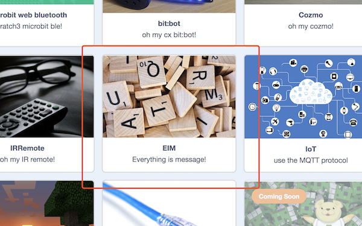
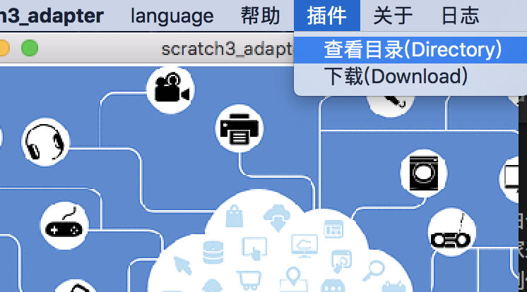
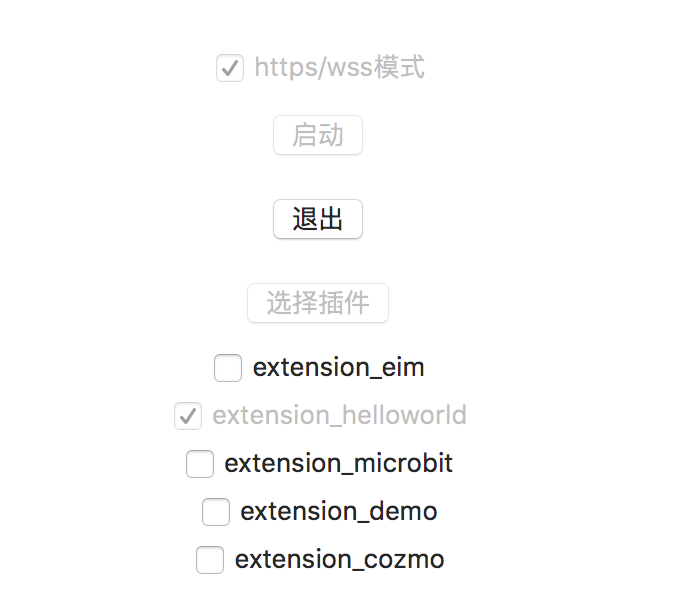

hello world
我们来写一个自定义插件，实现hello world
在上一节的架构图中，你可以看到，一个完整的插件，包含两个部分:
- scratch3.0网页中的插件(内应)
- 在codelab-adapter中写一个插件，代理外部硬件设备AI或其他程序
关于第一部分，尽管Scratch3官方的extensions机制已经可用了，我们也在Scratch3.0中写了很多插件，但由于目前文档缺失，不大建议大家来踩坑，等文档全了之后，再折腾不迟(目前官方正在优化Scratch3.0内部的插件系统，一些新的特性包括多语言支持等)。我们在Scratch3 Lab制作了一些通用的消息积木(EIM,本质上是一个Scratch3.0插件)，我们尽量将它做的通用，让开发者只需在codelab-adapter自定义插件，即可在Scratch3中使用
题外话: 这块的原理我们之后有机会细聊，其实核心概念很简单,如EIM所代表的含义: Everything Is Message,消息是一种极其强大的概念，如果你用过zeromq或者erlang大概深有体会
目标
在Scratch3 Lab中发送自定义的消息，之后让电脑用语音读出它（我在mac下做实验，如果你用的是其他操作系统，让电脑发音的那一行需要改一下）
开始
步骤1: 在Scratch3 Lab中打开EIM插件
打开Scratch3 Lab选择EIM插件

步骤2: 在codelab-adapter中写插件
ps:如果你没有安装codelab-adapter，请先安装(install)
我们的第一个插件起名为extension_helloworld.py:
import time, threading, subprocess
from codelab_adapter import settings
from codelab_adapter.core_extension import Extension
class HelloworldExtension(Extension):
def __init__(self):
name = type(self).__name__
super().__init__(name)
self.TOPIC = "eim"
def run(self):
while True:
message = self.read()
if message["topic"] == self.TOPIC:
payload = message["payload"]
self.logger.info("received message: {} from Scratch3.0".format(payload))
export = HelloworldExtension
一共14行代码，其中真正与我们做的事情相关的只有4行
message = self.read()
if message["topic"] == "eim":
payload = message["payload"]
logger.info("received message: {} from Scratch3.0".format(payload))
就是说其余部分你可以当作模版抄过来
步骤3: 将插件放到插件目录下，并运行它
打开codelab-adapter，让我们找到插件目录

在mac和linux下插件目录都是~/codelab_adapter/extensions/，windows下的，可以如上图自行查阅。codelab-adapter默认内置了一些插件，如果你熟悉Python，稍微翻一下代码，应该很快上手。更多的插件源码参考:Scratch3Lab/codelab_adapter_extensions
需要注意的是插件的命名必须形如extension_*.py,我们的插件调度系统只这种命名风格的文件视为插件(至于为何这样设计，而不更宽松一些，之后再说)
将我们刚才写的extension_helloworld.py插件放入目录之后，重启codelab-adapter，你就看到插件了，点击将运行它

大功告成! 你将在~/codelab_adapter/info.log中看到这条消息
小结
从这个例子中，我们可以看到写一个自定义的插件有多简单。而codelab-adapter对插件要做的事几乎没有任何限制，只要Python能做的事，插件系统都运行你做！就是说你可以自己写一个插件，让Scratch3来控制你的蓝牙设、你的ROS机器人、你那跑着opencv的树莓派或者你童年那辆心爱的玩具四驱车
更多的拓展
如果你熟悉Scratch3.0的extension系统，你可以在Scratch3.0中创建自己的js extension(如同我们在scratch3 lab中做的那些插件)，并与codelab-adapter连接起来，由于Scratch3.0的extension系统官方还在调整中，暂无文档，这部分的教程，我们等到官方文档完善之后再补上
enjoy it～